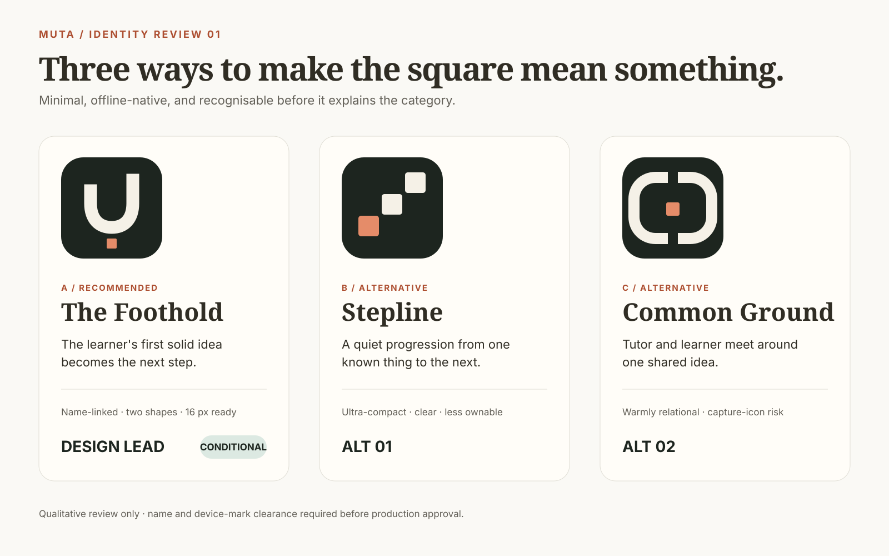
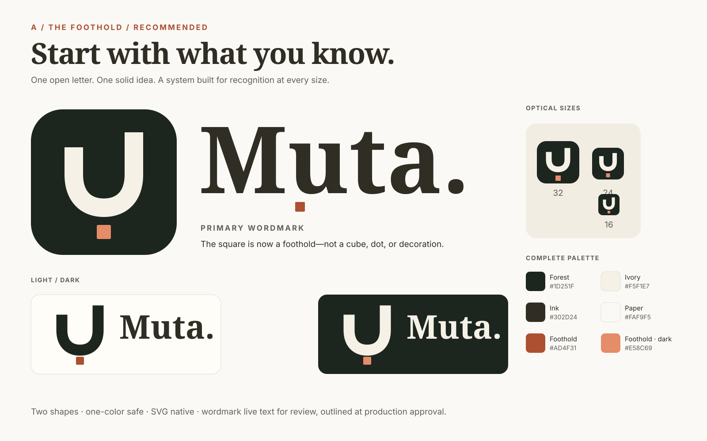
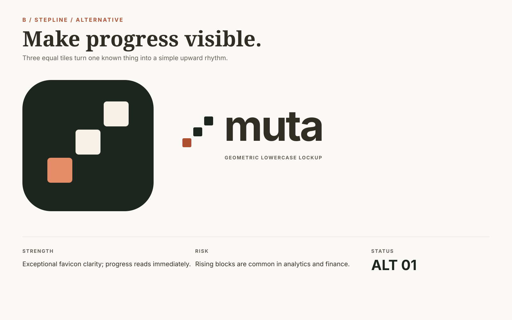
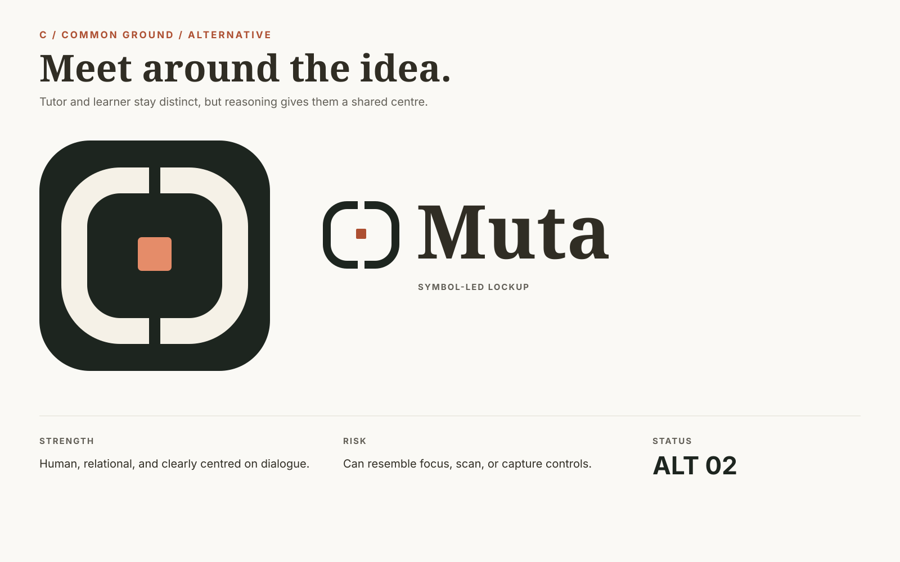
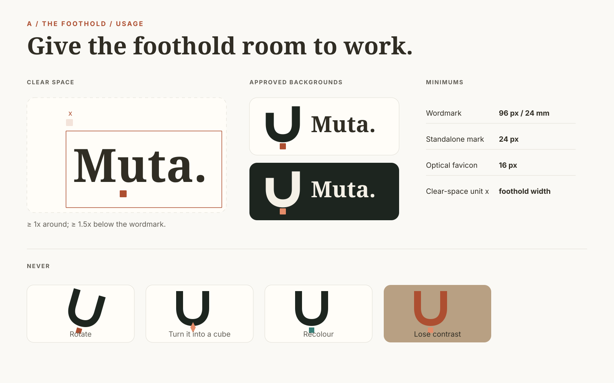

Muta / identity review / 12 September 2026
A more ownable mark for learning that starts where you are.
Three routes, one conditional design recommendation. This gallery is review-only: production assets remain untouched.

Concept overviewDirection A recommended

A — The FootholdConditional design lead

B — SteplineAlternative 01

C — Common GroundAlternative 02

Usage rulesClear space · contrast · minimums
actual 16 pxactual 24 pxactual 32 px
Pixel QANearest-neighbour display of exported PNGs
Supplied referenceContext only · not copied